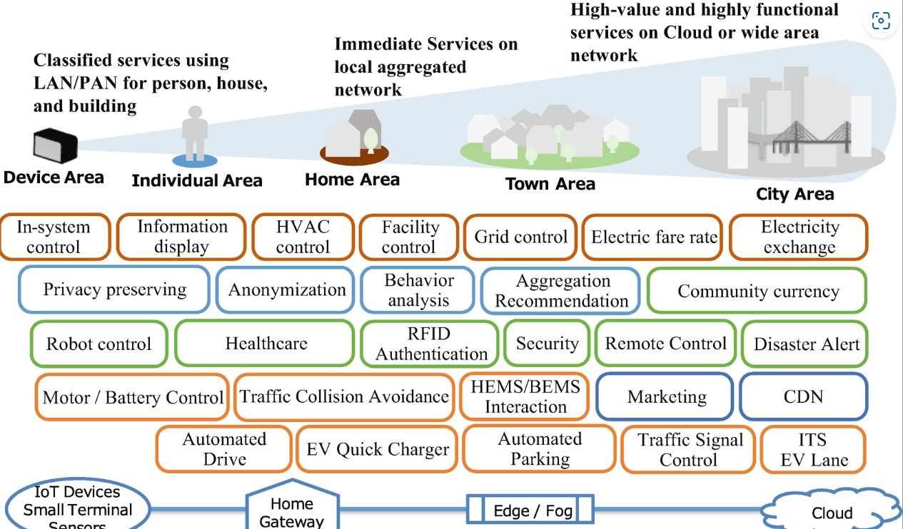
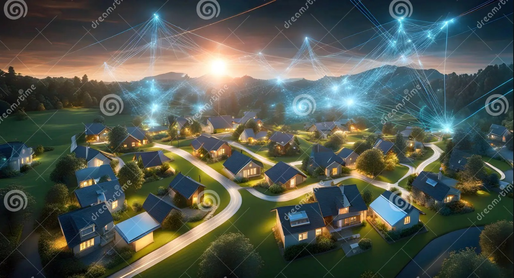
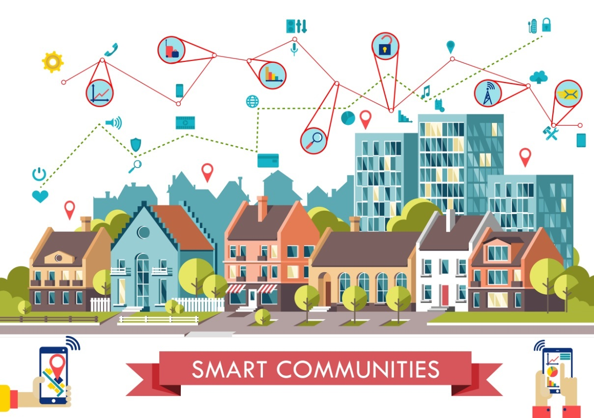
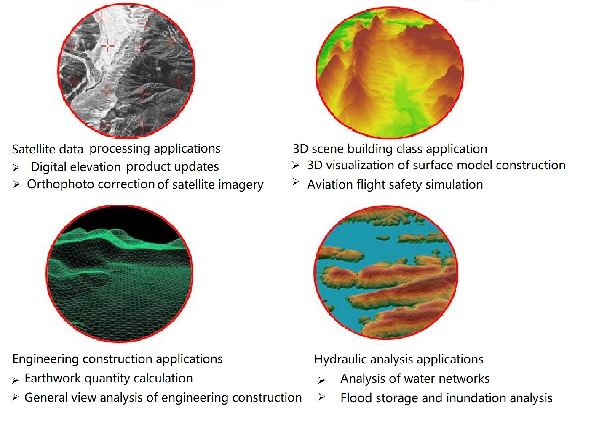
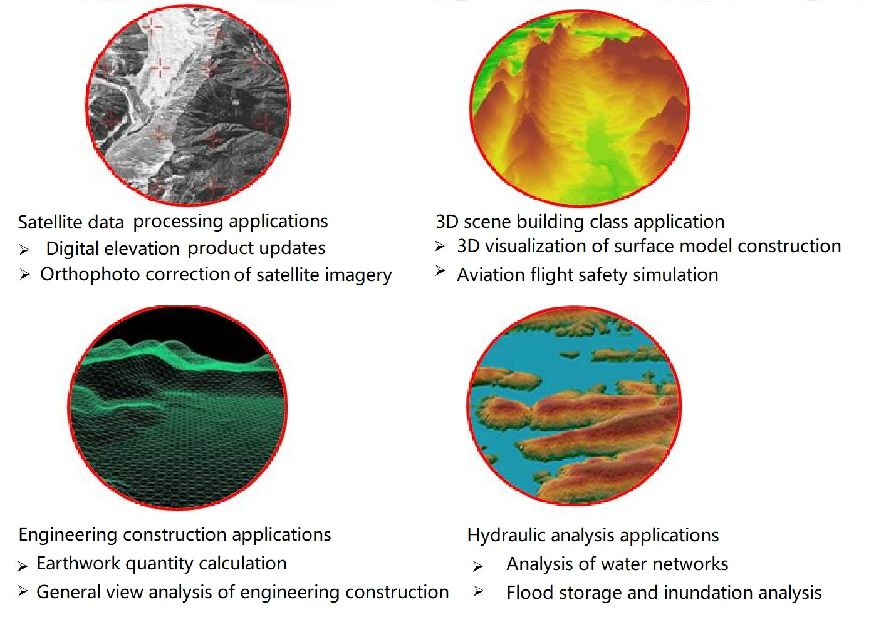
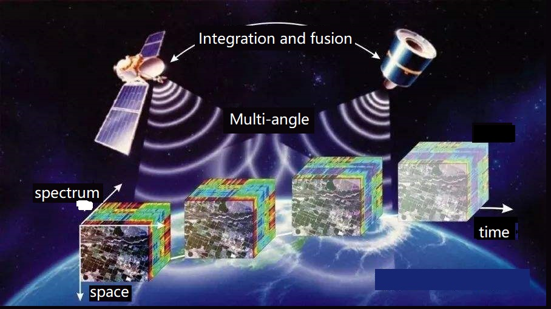
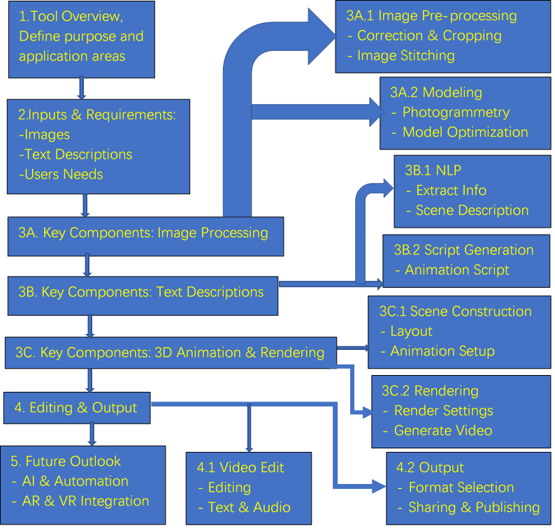

Services Overview
SMART COMMUNITY CONSTRUCTION WITH VIRTUAL REALITY TECHNOLOGIES
Building an intelligent community, especially by utilizing GIS (Geographic Information Systems), big data, virtual reality (VR), and third-generation network technologies, can significantly enhance the quality of life in the community and provide personalized services. Here are some steps and considerations to achieve this goal: 1. Planning Phase l Needs Analysis: Understand the community’s needs, including residents' lifestyles, traffic flow, infrastructure requirements, etc. l Goal Setting: Define the goals for the intelligent community, such as improving convenience, enhancing safety, and increasing environmental sustainability. 2. GIS Applications - Spatial Data Analysis: Use GIS technology to collect and analyze geographic spatial data, such as population density, traffic flow, and facility distribution. Intelligent Planning: Optimize infrastructure planning through GIS, including traffic route optimization and green space layout. - Real-Time Monitoring: Deploy sensors and cameras to monitor traffic, environment, and security in real-time, and manage through GIS systems for visualization. 3. Big Data Processing - Data Collection: Integrate big data from various sources, such as social media, sensor data, and transaction records. - Data Analysis: Use data analysis tools and algorithms to uncover patterns and trends in the data, supporting decision-making. - Predictive Modeling: Use big data for predictive modeling, such as forecasting traffic flow and energy demand, to enable preventive maintenance and optimize resource allocation.
Figure 1 Flow chart of 3D video app 4. Virtual Reality (VR) Applications - Virtual Community Experience: Create virtual reality models to allow residents to experience the community’s design and layout before construction begins. - Training and Education: Use VR technology to provide training and education for community services, helping residents better adapt to new technologies and services. - Remote Work and Communication: Provide a virtual reality platform to support remote work and communication, increasing community interaction and collaboration. 5. Third-Generation Network Technologies - 5G Networks: Utilize the high speed and low latency of 5G networks to enhance connectivity and communication efficiency of various devices in the intelligent community. - Internet of Things (IoT): Deploy IoT devices (such as smart lighting, smart homes, and smart monitoring systems) to elevate the level of intelligence in the community. - Edge Computing: Process data at the network edge to reduce latency and improve system response times, especially for applications requiring real-time feedback.

Figure 2 Smart Community
6. Implementation and Management - Technology Integration: Ensure effective integration and interoperability of GIS, big data, VR, and third-generation network technologies. - User Experience: Continuously gather feedback from residents to optimize systems and services, enhancing user experience. - Data Security: Implement stringent data protection measures to ensure residents' privacy and data security. - Sustainable Development: Consider the environmental impact of the community, adopting green technologies and sustainable development strategies.
Figure 3 Smart City
7. Global Perspective - Cultural Adaptation: Consider different cultural and language needs when designing and implementing the intelligent community. - International Collaboration: Collaborate and share knowledge with intelligent communities in other countries and regions to promote global technological advancement and best practices.

Figure 4
Big data business
WUHANGTECH's big data business is divided into customized services and general services. Customized services are mainly based on multi-source remote sensing, aerial surveys, and other mapping methods to obtain data resources, to assess natural resources such as land, water conservancy, fisheries, and mining. When big data is used in cities and communities, The GIS system established by combining 3D modeling and data mining can provide data services for the construction of smart cities and smart communities. WUHANGTECH can also produce general-purpose products to provide licensing services for customers with big data resource analysis needs.
 Figure 5 Monitoring of seasonal changes in lakes and landforms using satellite remote sensing data

Figure 5 Monitoring of seasonal changes in lakes and landforms using satellite remote sensing data

Figure 6 Application scenarios of multi-source remote sensing data
 Figure7 Resources profiling with integration and fusion technoligy by arrary of devicesFigure8 Smart Comunity
3D VIDEO CREATION PLATFORM
Overview of Xihu Technology Co., Ltd.'s 3D Intelligent Video Development Platform Xihu Technology Co., Ltd.'s 3D Intelligent Video Development Platform integrates advanced technologies, including text descriptions, minimal image input, 3D modeling, Virtual Reality (VR), and Artificial Intelligence (AI) for video synthesis. The platform aims to streamline the creation process of 3D videos, providing users with high-quality, immersive visual experiences. Below is a detailed description of the platform's main components and revenue model. 1. Platform Components l Text Descriptions n Function: Users provide textual descriptions of scenes and content, and the platform extracts key information using Natural Language Processing (NLP) technology. n Technology: NLP algorithms are used to recognize and interpret scene information, object characteristics, and action details from the text. l Minimal Image Input n Function: Users upload a small number of high-quality images, which the platform uses to generate 3D models. n Technology: Image processing and computer vision techniques are applied for image preprocessing and 3D reconstruction (e.g., Photogrammetry). l 3D Modeling n Function: Detailed 3D models are generated based on images and text descriptions. n Technology: 3D modeling software (e.g., Blender, SketchUp) is used for model construction and optimization. l Virtual Reality (VR) n Function: Creates a virtual reality environment, allowing users to experience 3D scenes in an immersive virtual space. n Technology: 3D models are integrated with VR technology to enable real-time interaction and virtual tours. l Artificial Intelligence (AI) Video Synthesis n Function: Uses AI technology to synthesize the final 3D video, including animation, transition effects, and video editing. n Technology: AI video generation algorithms automate video editing and effect addition, improving production efficiency and quality. 2. Market Entry Strategy l Technical Barriers: Due to the complexity and high cost of the platform's technology, the company may choose to acquire existing technology or companies to enter the market quickly rather than through competition. l Market Protection: Acquisitions provide some level of technical and market protection for creators, avoiding direct competition and ensuring the uniqueness and innovation of the platform's technology.
Figure 9 Folw chart of 3D video creation flow chart
3. Revenue Model
l Advertising
n Model: Revenue is generated through advertising on the platform or brand partnerships for promotional activities.
n Income: Advertising revenue comes from ad placements in user-generated content and brand collaboration projects.
l Licensing
n Model: Charges for platform usage licenses or technology authorization fees, including software licenses, API access, and patent usage fees.
n Income: Licensing revenue is earned from other companies or developers using the platform's technology or software for project development.
Conclusion
Xihu Technology Co., Ltd.'s 3D Intelligent Video Development Platform combines advanced technology with market protection strategies to offer innovative 3D video solutions. Through technology development and efficient revenue models, the platform not only provides protection for creators but also brings diversified income sources to the company.
Figure 10 Schematic diagram of the agricultural product traceability system Light and shadow effect
Figure 11 Three Dimension Creation